Одноместный вариант имеет более высокую проходимость, поэтому чаще всего их выбирают спортсмены. А вот безопасная езда для двух пассажиров обеспечена на двухместном.
Официальный дилер квадроциклов STELS с доставкой до дверей
Позвоните, и мы проведем первоклассную консультацию
- 8 (800) 555-97-83
- 8 (495) 374-74-70
Stels — это самые универсальные
и доступные квадроциклы на рынке
Со Stels ты можешь делать все, что хочешь!
-
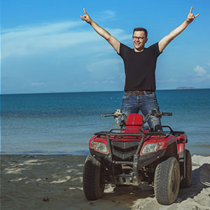
Для удовольствия
-
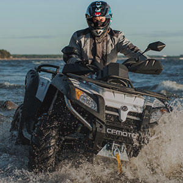
Для приключений
-
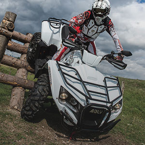
Для адреналина
-
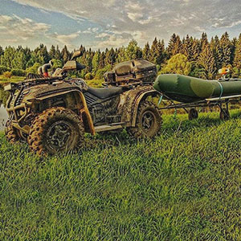
Для охоты и рыбалки
-
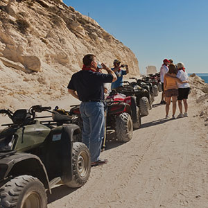
Для пикника
-
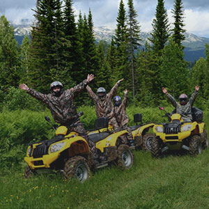
Для поездок за грибами
-
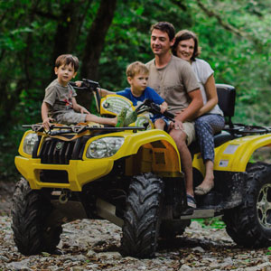
Для семьи
-
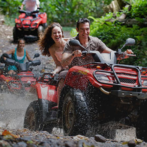
Для девушки
-
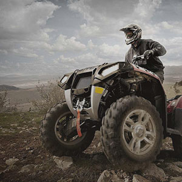
Для тебя
Оцени все преимущества квадроциклов Stels
Квадроциклы Stels по-настоящему удобны
в эксплуатации и готовы к любым погодным условиям
Задний силовой бампер
Передний силовой бампер
Расширители арок
Защита рук
Вместительные платформы для багажа
Галогеновые линзированные фары головного света
Высокий клиренс
310 мм
310 мм
Сверхпрочные легкосплавные диски
Пассажирское сиденье с удобными рукоятками и подножками
Почему покупать онлайн удобно и выгодно?
-
Вам не нужно думать о том, как доставить квадроцикл на дачу или домой
Мы знаем о транспортировке крупногабаритной техники всё и доставим Ваш квадроцикл точно в срок туда, где вы можете сразу кататься.
-
Спортхит – официальный дилер с 12-летней историей, а не перепродавец
Вся техника проходит предпродажную подготовку на авторизованном сервисе и имеет гарантию производителя. В нашей практике не было ни одного возврата.
-
Мы гарантируем действительно самую низкую цену на рынке
Спортхит зарабатывает на выгодном сотрудничестве с заводом-производителем, а не на покупателях. Если Вы найдете цену меньше, скажите нам, и мы сделаем скидку.
-
Мы не берем предоплату. Оплачивайте тогда, когда получаете квадроцикл
Мы верим нашим покупателям и не берем 100% предоплату перед доставкой. Для того чтобы мы отправили к Вам квадроцикл, нам нужен всего лишь небольшой залог.
Подробнее о доставке и оплате -
Мы не тратим Ваше время на ожидание и подготовку документов
Выбранный квадроцикл приедет к Вам с полным пакетом документов. Останется только поставить подпись в Договоре купли-продажи и отдать наш экземпляр специалисту по доставке.
-
При доставке наш специалист проведет подробный инструктаж
К вам приедет не просто курьер. Ваш квадроцикл привезет обученный специалист, который расскажет, как ухаживать за техникой и покажет как ей управлять.
СпортХит – крупнейший и старейший
продавец квадроциклов
12 лет стабильной работы на рынке мототехники
-
Официальный дилер Stels
-
Самые низкие цены на рынке
-
Болee 25 000 проданных квадроциклов и ни одного возврата
-
Гарантия производителя на все модели
-
Мы проводим тщательную предпродажную подготовку
-
Все квадроциклы сразу готовы к эксплуатации
Выбери свой STELS
Мощность двигателя:
Комплектация:
Цвет:
- 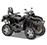
- 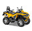
- 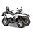
- 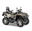
Код товара: 372377
Stels ATV 800 Guepard Touring
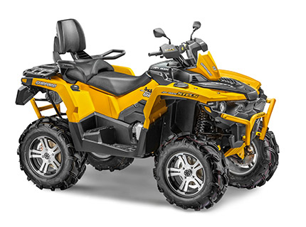
Цена:
544 000 руб.
В наличии
Stels ATV 800 Guepard Touring отвечает самым современным стандартам и понравится любителям бездорожья. Мощный инжекторный двигатель выдает 73 Нм крутящего момента, а клиноременной вариатор позволяет пользоваться экономичным моноприводным режимом на хорошей трассе и моментально перейти
Читать полностью
Основные характеристики
- Количество мест 2
- Мощность двигателя 67 лс
- Крутящий момент 73 Нм
- Топливный бак 29 л
- Клиренс 320 мм
- Лебедка 4500 lb
- Все характеристики
- Объём двигателя (куб. см): 800
- Мощность двигателя (л.с./об.м.): 67/6000
- Максимальный крутящий момент (Нм/об.м.): 73/5000
- Тип двигателя: 4х-тактный, 2-цилиндровый, V-образный
- Тип трансмиссии: клиноремённый вариатор (CVT) (L-H-N-R-Р)
- Режим работы трансмиссии: 2WD/4WD/4WD Lock
- Габаритные размеры (ДхВхШ) (мм): 2344 х 1228 х 1420
- Сухая масса (кг): 369
- Тип квадроцикла: Утилитарные
- Объем топливного бака (л): 29
- Тип сцепления: автоматическое
- Система привода: вал карданный
- Система пуска двигателя: электростартер
- Система питания: инжекторная, бензин с октановым числом не ниже 92
- Система охлаждения: жидкостная
- Передняя подвеска: независимая, двухрычажная с пружинно-гидравлическими амортизаторами, ход 230 мм
- Задняя подвеска: независимая, двухрычажная с пружинно-гидравлическими амортизаторами, ход 207 мм
- Передний тормоз: дисковый с гидравлическим приводом
- Задний тормоз: дисковый с гидравлическим приводом
- Колеса: MAXXIS ZILLA 26 AT26x9"-12"/AT26x10"-12"
- Диски: легкосплавные
- Колесная база (мм): 1530
- Высота по седлу (мм): 1000
- Дорожный просвет (мм): 310
- Лебедка: 4500Lb кевларовый трос
- Защита днища: пластик
- Зеркала
- Сиденье пассажира с ручками
- Фаркоп
- Передняя багажная решетка
- Задняя багажная решетка
- Защита рук
- Светодиодные линзованные фары головного света
- Светодиодный стоп-сигнал
Не забудьте про экипировку
У нас представлен огромный ассортимент надежной экипировки для квадроциклистов.
Выбирайте то, что Вам нравится и мы привезем несколько размеров на примерку
Куртка с влагозащитой
Мы рекомендуем куртки из прочной мембранной ткани с водозащитой не менее 15 000 мм
Перчатки
Перчатки защитят ваши руки от мозолей и повреждений. Для квадроциклистов по всем характеристикам идеально подходят кроссовые перчатки
Брюки
Брюки (или комбинезон) должны быть из прочной мембранной ткани с водозащитой не менее 15 000 мм, покрытие такой ткани препятствует промоканию, а также налипанию грязи
Наколенники
Шлем
Самый важный элемент защиты, ведь он защищает вашу голову. Крайне нежелательно садиться за квадроцикл без шлема, независимо от того, где и как вы планируете эксплуатировать технику. Для квадроциклистов мы рекомендуем шлема, которые полностью закрывают голову и имеют твердую защиту челюсти.
Черепаха
Основная цель черепахи – защитить спину и позвоночник от ударов при падении
Ботинки
Если в ваши планы входит агрессивная езда по пересеченной местности, то Вам необходимы влагоустойчивые ботинки на специальной нескользящей подошве
Покупайте квадроцикл Stels
в СпортХит так, как вам удобно
Вы точно найдете оптимальный для себя способ оплаты и доставки
- Оплата
- Доставка
- Кредит
- Доп. услуги
-
Наличный расчетВы можете оплатить квадроцикл наличными при получении
-
Безналичный расчетВы можете сделать банковский перевод на наш расчетный счет. Реквизиты
-
Оплата картой
Мы принимаем кредитные и дебетовые карты любых банков
-
Денежные переводыМы поддерживаем прием платежей через Web-money и другие системы
-
Москва и Московская область
Доставка по Москве и Московской области осуществляется бесплатно.
Мы предлагаем 2 способа доставки:
Курьерская доставка до дверей
Получение техники в Пункте СамовывозаАдрес Пункта Самовывоза: Сколковское ш., 31 с.1, ТЦ СпортХит, Пункт Выдачи заказов СпортХит
-
Доставка по России
Мы подготовим необходимые документы, бережно запакуем и доставим Ваш квадроцикл в любой город России.
Рассчитать стоимость доставки Вы можете по номеру 8 (800) 555-97-83 или оставив Заявку.
-
Кредит и рассрочка в СпортХит
Не откладывайте мечту на завтра!Любой квадроцикл можно приобрести в кредит или рассрочку от наших банков-партнеров всегда на выгодных условиях -
- Услуга доступна для граждан РФ в возрасте от 18 до 69 лет
- Оформление по одному документу
- Сумма от 3 000 до 900 000 рублей
- Срок от 3 до 36 месяцев
- Первоначальный взнос от 0%
- Рассмотрение заявки 10 минут
-
Берегите свое время
Полный комплекс услуг для вас- Страхование квадроциклов от рисков (кража со взломом, грабеж, разбой)
- Страхование ОСАГО
- Спутниковая охранно-поисковая система
-
Позвоните нам , и мы поможем Вам выбрать страховой продукт, который подойдет именно Вам
- 8 (800) 555-97-83
- 8 (495) 374-74-70
FAQ
-
Как выбрать себе квадроцикл?
Квадроцикл — прекрасное решение для загородного отдыха, работы на участке, рыбалки, охоты.
Рынок квадроциклов сейчас разнообразен. Они различаются по назначению, стоимости, производителю, мощности двигателя.
Давайте же разберемся, какой лучше выбрать?
По типу квадроциклы различаются на одноместные и двухместные.
Одноместный вариант имеет более высокую проходимость, поэтому чаще всего их выбирают спортсмены. А вот безопасная езда для двух пассажиров обеспечена на двухместном.
По моделям квадроциклы делят на 3 больших класса:
Спортивные — разрабатываются для гонок. Имеют привод на два колеса, надежную независимую подвеску, легкий кузов и мощный двигатель. Оснащены защитой гонщика от возможных травм.
Туристические — рассчитаны на езду по бездорожью, хорошо приспособлены к спускам и подъемам, так как оснащены полным приводом. В большинстве случаев их используют для поездок на дальние расстояния, поэтому они имеют хорошую и комфортную подвеску, защиту днища и комфортные сиденья.
Утилитарные — в основном приспособлены для загородного отдыха и работы на хозяйстве. Основная особенность утилитарных квадроциклов — универсальность и возможность подстроиться под Ваши нужды: рыбалка, охота, загородный отдых, путешествие по горам, лесам, болотистой местности или просто для развлечения.
Главное при выборе квадроцикла понимать, для чего Вы будете его использовать.Для охоты. Подойдет утилитарная модель. Квадроцикл для данных целей должен иметь лебедку, надежный и мощный двигатель и колеса с высоким протектором. Современные квадроциклы способны транспортировать двух охотников с полным снаряжением и грузом до 350 кг.
Для рыбалки. При выборе квадроцикла для рыбалки можно руководствоваться теми же ориентирами, что и для охоты. Обратите внимание на защиту водителя от грязи, а также, наличие мощной лебедки, агрессивной резины и разнообразной расцветки.
Для работы. Рабочий квадроцикл — незаменимый помощник на стройке, в усадьбе или на участке в загородном доме. Его используют в горах, в лесах, для перемещения грузов, для уборки снега и в развлекательных мероприятиях. Объем двигателя рабочего квадроцикла — 500 куб. см., но, если Вы собираетесь транспортировать крупногабарит — присмотритесь к 700-800 куб. см. объему.
Для быстрой езды. Тут можно сделать выбор и приобрести спортивный мотовездеход, а можно и утилитарный, т.к. некоторые производители выпускают утилитарные квадроциклы, взяв за основу спортивные модели. Если же вы профессиональный спортсмен, вам подойдут только спортивные модели.
Детский квадроцикл. Главное для детского квадроцикла — безопасность. Если вам предстоит выбрать детский квадроцикл, обращайте внимание на возможность ограничения максимальной скорости путем регулирования хода курка, а также весовые и ходовые характеристики.
У производителя STELS представлен широкий выбор детских квадроциклов, отвечающим условиям безопасности Вашего ребенка.Квадроцикл для бездорожья. Выбор есть и среди утилитарных и среди туристических квадроциклов, вопрос только в специфике местности. Для горных условий больше подойдет туристический квадроцикл, для остальных — утилитарный.
Самые популярные российские квадроциклы — STELS — простые в эксплуатации квадроциклы для отдыха, работ и перевозки грузов. Широкий выбор возможностей тюнинга и прекрасная ценовая политика позволяет STELS лидировать среди остальных.
Всегда помните, что важнее всего в квадроцикле Ваше здоровье и безопасность!
-
Функционал квадроцикла (тюнинг и т.д.)
Можно разделить тюнинг на необходимые примочки для расширения функционала квадроцикла и удобства, а также тюнинг, улучшающий характеристики Вашего квадроцикла.
Из того, что можно выбрать в качестве дополнения для удобства это:
- Бампера для квадроциклов.
- Прицепы. Если Вы собираетесь на охоту, в поход, перевозите крупногабарит, то без прицепа не обойтись.
- Кофры. Если вы собрались в путешествие, то все сможет поместиться в кофре. Существуют жесткие и мягкие, задние и передние. Для того, чтобы понять, какой кофр Вам нужен, стоит примерить на свой квадроцикл разные виды.
- Гусеницы. Значительно повышают сцепление с трассой, а ваш квадроцикл станет настоящим вездеходом.
- Лебедка. Это практически единственный помощник, если вы застряли.
- Накладки на руль. При езде по грязи и воде рукоятки руля быстро становятся скользкими, что усложняет управление квадроциклом. Рекомендуем использовать накладки для руля, которые выводят излишки воды и повышают комфорт в управлении квадроциклом.
- Снегоотвалы. Если Вы работаете на участке зимой, то эта вещь Вам просто необходима.
- Подогрев седла и ручек.
- Ветровое стекло.
- Акустическая система.
Также к тюнингу относится и сигнализация. Не забудьте позаботиться о сохранности и безопасности своего квадроцикла.
Максимально улучшить ходовые качества и характеристики Вашего квадроцикла поможет более профессиональный тюнинг:
- Прямоточный выхлоп. Он придаст Вашему зверю от 3 до 7 лошадиных сил.
- Грязевые шины. Если вам надоело ездить по обычным проселочным дорогам и хочется настоящего экстрима, для преодоления глубоких грязевых ям и топких болот необходимо приобретать грязевые шины. Они улучшают сцепление с поверхностью и уменьшают вероятность пробуксовки.
- Шноркель. Чтобы двигатель и вариатор квадроцикла «дышали», когда машина ныряет глубоко в воду, устанавливаются трубы-воздухозаборники — шноркели. Они выводятся наверх перед рулем. Высота их зависит от того, насколько серьезно водитель квадроцикла собирается нырять.
- Защита днища, рычагов и порогов.
Возможности подбора дополнительного оборудования квадроциклов STELS ATV безграничны. Если вы хотите самостоятельного подобрать аксессуары на квадроцикл и проявить свою индивидуальность, то присмотритесь к моделям STELS.
-
Какие права нужны на квадроцикл?
Для управления квадроциклом Вам потребуется удостоверение тракториста-машиниста, с категорией АI. Такой документ выдает Гостехнадзор.
Данная категория создана специально для автоматизированных мототранспортных средств, которые не предназначены для езды по дорогам, относящимся к трассам общего пользования.
Чтобы получить удостоверение тракториста-машиниста, можно пойти учиться в автошколу, которая занимается подготовкой водителей внедорожных мототранспортных средств. Также необходимо пройти медицинскую комиссию и получить специальную медицинскую справку, в которой должно быть указано, что Вы годны к управлению самоходными машинами (а не обычными автомобилями) соответствующей категории.
Для получения прав необходимо сдавать теорию и практику. Занимает обучение около 1-2 месяцев. Для тех, у кого уже имеется водительское удостоверение от категории «В» и выше, теоретический экзамен сдавать не нужно, что значительно упрощает ситуацию.
-
Нужно ли регистрировать квадроцикл?
Регистрация квадроцикла, как и любого другого транспортного средства, обязательна. Купив квадроцикл, вы обязаны зарегистрировать его в Гостехнадзоре. На регистрацию у вас есть 10 дней.
Если Вы не успели зарегистрировать квадроцикл в течение данного времени, то придется заплатить штраф от 1500 до 2000 руб. Юридическим лицам выпишут штраф на более крупную сумму — от 5000 до 10000 руб. Поэтому лучше не стоит затягивать с регистрацией.
-
Как регистрировать квадроцикл?
Регистрацию условно можно разделить на несколько шагов:
- Для получения заявления и реквизитов для оплаты госпошлины и регистрации Вы можете посетить отдел Гостехнадзора города Москвы или зайти на портал ГосУслуг либо на сайт Гостехнадзора города Москвы;
- Подойти в отдел Гостехнадзора города Москвы с комплектом документов: заявление установленной формы; паспорт СМ с указанием в нем собственника самоходной техники; свидетельство о регистрации самоходной техники (в случае, если техника ранее состояла на регистрационном учете); договор купли-продажи (либо иной документ, подтверждающий право собственности); акт приема-передачи с указанием номеров агрегатов; полис обязательного страхования гражданской ответственности (далее ОСАГО) владельцев транспортных средств. Полис ОСАГО не требуется для сельскохозяйственной техники и самоходных машин, максимальная разрешенная скорость которых равна или менее 20 км/час; сертификат соответствия самоходной техники, указанный в паспорте самоходной машины; транзитный государственный регистрационный знак, если он выдавался; паспорт гражданина РФ (для физических лиц), комплект уставных документов организации (для юридических лиц, обратившихся впервые).
- Получение регистрационных документов на СМ:
— государственный регистрационный знак;
— паспорт самоходной машины с отметкой о регистрации;
— свидетельство о регистрации.
-
Как обкатывать квадроцикл?
Обкатывать новый квадроцикл необходимо обязательно, чтобы не нагрузить двигатель и продлить срок службы своего квадроцикла! Очень многие владельцы начинают проводить различные тесты на проходимость и испытывать свой крутой агрегат. Но всему свое время! Обкатку на первых километрах надо проводить с особой аккуратностью.
Итак, что нужно знать, когда Вы только купили квадроцикл и готовы нажать газ в пол:
- Стоянка и длительное использование на холостую нежелательны
- При проезде первых 25-30 км остановитесь и дайте остыть двигателю
- От 250 до 1000 км двигайтесь со скоростью 35 км/ч со средней нагрузкой
- От 1000 до 1500 км разрешена скорость до 40 км/ч
- От 1500 до 2500 км разрешено движение с полной нагрузкой на скорости 60 км/ч
При первоначальной эксплуатации до 500 км не стоит ездить на длинные расстояния. На данном этапе происходит максимальная притирка деталей друг к другу.
Очень важно обеспечить передвижение квадроцикла с различными скоростными режимами, что будет обеспечивать притирку на разных скоростях и оборотах двигателя.
Другими словами, обкатка квадроцикла это обычная езда по простой дороге в удовольствие без чрезмерного нажатия на педаль газа. В случае случайного попадания в сложные дорожные условия стоит включить пониженную передачу несмотря на лёгкость преодоления препятствия на повышенной.
Не торопитесь сажать людей на свой квадроцикл. Производители STELS сообщают, что вождение квадроцикла с пассажирами разрешается только после полной обкатки.
За один присест обкатку проводить не следует, лучше разбить её на несколько этапов.
-
Срок замены масел и фильтров (Прохождение ТО)
Согласно постановлению №1013 от 13 ноября 2013 года технический осмотр самоходной техники проводит Гостехнадзор.
Квадроциклы и снегоходы проходят технический осмотр 1 раз в год. Эта техника, согласно постановлению, будет проходить техосмотр 1 раз в полгода.
Технический осмотр самоходных машин включает в себя следующее:
а) проверку наличия документов, а также информации об уплате государственной пошлины за выдачу документа о прохождении технического осмотра машины;
б) проверку соответствия машин данным, указанным в представленных документах, и идентификацию машин;
в) проверку технического состояния машин (за исключением новых машин и машин возраст которых не превышает 1 календарный год);
г) оформление документов о прохождении технического осмотра.
Сроки замены масла в квадроцикле указываются в инструкции по эксплуатации квадроцикла. Следите за техническим состоянием своего квадроцикла!
-
Какой объем двигателя лучше?
Существуют разные объемы двигателей, наиболее популярные в модельном ряду STELS. В данной марке квадроциклов объемы двигателей начинаются от 50 до 800 кубических сантиметров. Нельзя выделить конкретный объем двигателя и сказать, что он лучше. Каждый хорош по-своему.
1. 50-100 кубических сантиметров
Это квадроциклы для повседневной эксплуатации. Сейчас они относятся к категории «детские». Отличаются компактными размерами и удобством управления. Максимальная скорость таких квадроциклов до 50 — 60 км в час.
2. 300 кубических сантиметров
В основном это утилитарные квадроциклы, предназначенные для активной езды по бездорожью, ямам и валунам. Максимальная скорость — 80 км/ч.
3. 500-600 кубических сантиметров
Ездить по бездорожью и преодолевать препятствия на них — сплошное удовольствие! Такой квадроцикл без труда одолеет любую местность.
4. 650-800 кубических сантиметров
Такие квадроциклы полноприводные, с автоматическим сцеплением. Двигатель этой мототехники очень мощный, с его помощью вы можете преодолевать различные препятствия (горы, водные преграды) и даже двигаться под углом до 60 градусов. Скорость 800 кубового мотоцикла STELS — 100 км/ч.
Если вы до покупки квадроцикла видели его только на картинке, не торопитесь приобретать квадроцикл с большим объемом двигателя. Размер, конечно, имеет значение, но на первых порах вы с трудом будете справляться с 800-кубовым мотором на всей мощности, так что лучше не торопиться. Для первых экспериментов вполне хватит 300 кубового квадроцикла.
Оформите Заявку на квадроцикл онлайн и получите сертификат на 10 000 рублей
Оставить Заявку
Подробнее об Акции